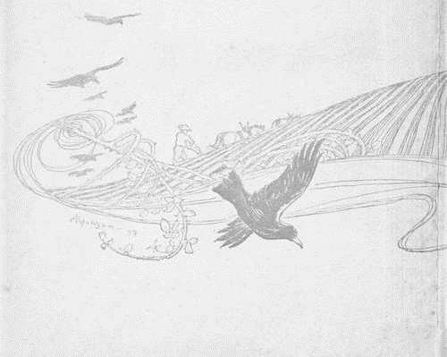
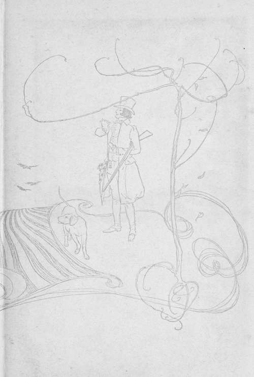
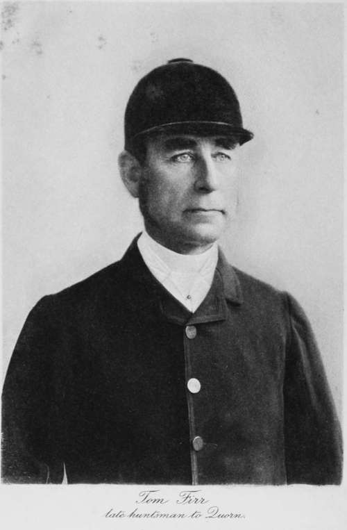

Chapter I. Introductory
Description
This section is from the book "Hunting: A Manual of Fox, Hare, Stag & Otter Hunting", by J. Otho Paget. Also available from Amazon: Hunting: A Manual of Fox, Hare, Stag & Otter Hunting.
Chapter I. Introductory
The hunting enthusiast is never tired of talking of the subject he loves, and I only hope the reader may not grow weary of reading long before I have finished my book. The honour the editors of the Haddon Hall Library have done me in seeking my co-operation I thoroughly appreciate, and I trust they will not be very disappointed with the result. They have told me I need not be bound by the precedents of past publications, and am not to be too severely technical; so that I intend to ramble on from one point to another in the light manner of those engaged in a smoking-room discussion. You must please remember that this volume does not pretend to be a complete text-book on hunting, but at the same time I hope to convey some useful information to those who are not past masters of the art.
I am not going to travel the beaten track and repeat the well-worn advice of previous writers: if you want their opinions you must buy their books. I write as things appear to me, giving you my own ideas and impressions. When I disagree with well-known authorities, I shall probably be in the wrong, but you must give me the credit for an honest belief in my own convictions. I do not mean to infer that I am starting an entirely new set of theories on hunting, but what I write herein will be the outcome of my own observation and reflection ; accepted views will only be set down where they coincide with my opinions. Not that I wish to constitute myself an authority on hunting ; but I venture to think that a book claiming to be an original work should not be a crib from previous writers on the subject. If you do not agree with me on every point, I must beg you to be tolerant of a very ordinary mortal, who is liable to err and who may often look at things in the wrong light. I give you my ideas and opinions for what they are worth, but you must understand that I fully appreciate my fallibility and power of making mistakes. Doctors differ, and the shining lights of the hunting world often disagree on important questions, so that I can hardly expect to wade into these disputed waters without stirring up some mud and laying myself open to hostile criticism.
When man first entered into partnership with the dog to pursue other animals will never now be accurately known, but there is no doubt that our prehistoric ancestors hunted something in their own peculiar fashion. Coming down to a more recent date, we read of Xenophon hunting the hare, but this ancient history is neither entertaining nor instructive. In 1781, Peter Beckford published his 'Thoughts on Hunting, and that book remains a standard work to this day. Before Beckford, Somerville wrote a poem called 'The Chase,' and there were a few other treatises on hunting prior to that time, but they contain nothing which is applicable to the sport as it is known to-day. Those who wish to learn something of the art of hunting will find Beckford a most delightful book, which every sportsman should have in his library.
The word 'sport' now is made to cover a multitude of things, which to my mind should be classed under another name. Hunting the carted stag and the drag may be pleasant and harmless amusements, but they are not sport; and the same may be said of a bagged fox. To further illustrate my meaning, I should say it is sport to hunt the rat with terriers on his own ground, but to first catch that animal and then turn him out before dogs is not sport. Shooting pigeons from a trap is certainly not sport, but it is a very nice point where the line should be drawn in shooting pheasants that only the evening before have fed from the keeper's hand. Of course it is only the feeling and the idea, but if once a man shoots for any other reason than the love of sport, he loses more than half the pleasure, and is no longer a sportsman. A little competition certainly enhances the pleasure of all sport, but too much may destroy the real thing altogether. They who hunt solely for the pleasure of a ride should devote themselves to drag-hunting, and they who shoot to exhibit their skill, should find as much satisfaction in shooting pigeons as any wild game.
One often hears the expression ' outdoor sports,' and I always wonder what kind of sport it is that can be enjoyed indoors. My idea of sport is pursuing a wild beast or bird in the open air, and in the country where the object of pursuit has been bred. You may think this rather a narrow-minded view, but that is how it appears to me. The man who had a thousand pheasants down from Leadenhall market, and turning them out of his attic-windows, shot them as they rocketed over high elm-trees, may have had some very pretty shooting, but I do not think any one could call it sport. I have never done any hawking, but that I should certainly call sport. Nearly all forms of fishing also deserve the name, whether it be the higher art with the fly or the humble angling for coarse fish in a sluggish river. The pleasures of both shooting and fishing are very considerably enhanced when your bag or basket is meant for the pot. 'Pot-hunter' is generally used as a term of reproach, and yet I think the pot should be the ultimate end you ought always to have in view. Suppose yourself in the Rockies or some other wild place, a hundred miles from the nearest butcher, and the camp is in want of fresh meat. In that case the successful stalk of a fat buck will fill your heart with happiness, and however tough the venison may be, you prefer it to the tenderest beef-steak that London could produce. Of course you would try for the best head, even though you knew the yearling would be better eating, but your pleasure in shooting the monarch of the herd would be more than half spoilt had you to leave his carcass to the coyotes. It is not a question of stomach, for it is quite as satisfactory if what you shoot can be given to some one who will appreciate it. You really want to bag your game, and if that can't be done, you feel you would rather not have shot it. Dogs are in sympathy with us in our sporting aims, and they too have this curious desire to bag the animal or bird that has been shot. The disgust of a pointer or setter is quite painful to behold when the game he has found is repeatedly missed. In further illustration of this trait in dogs, I must tell you a little story of a fox-terrier I had with me out in Western America. For the first month he was out there he wore himself to a shadow, and very nearly broke his heart, in vain attempts to catch a prairiedog. This little animal, as you probably know, is not a dog, but something between a rat and a rabbit. He has an aggravating way of sitting on his haunches at the edge of his burrow out on the open prairie, making a shrill squeaking noise that immediately arouses the sporting instincts of a well-bred terrier. He will wait until the terrier is within a yard or two, and then disappear underground. These prairie-dog colonies or towns, as they are called, sometimes cover three or four acres, and over each burrow the owner sits and pipes a defiant squeak. The terrier races from one burrow to another, and the cunning little brutes remain squeaking to the last second before they disappear. ' Tramp ' would run after them all day under a broiling sun until he was completely exhausted, and then, if we passed another dog-town, he would turn his head the other way and pretend not to see or hear them. ' Tramp' was, however, a dog of great intelligence, and finding the straightforward plan useless, he decided to try stratagem. One day, as we rode over the prairie, I noticed 'Tramp,' instead of making his usual rush after his enemies, was adopting feline tactics, and in a crouching position was crawling stealthily upon them. The impertinent little prairie-dog squeaked away merrily as usual, and fate crept silently on him from behind. Nearer and nearer crawled ' Tramp,' making no more noise than a cat, and then, when within a yard or two, he made one spring and grabbed his prey by the back. Of course I was delighted with my companion's cleverness and made a great fuss with him, but I never saw a dog more pleased and satisfied with himself. I thought the episode finished, and, having no use for the carcass, rode on and left it behind. A mile or two further on I looked back and found ' Tramp' was carrying the prairie-dog's body, which must have weighed at least four or five pounds, though there was a scorching sun and we had travelled some distance. When I told him to leave it and come on he put it down, but picked it up again when I went forward. Then I knew that he wanted me to carry his spoil, and though it is an evil-smelling creature, I was obliged to fasten it to the saddle, but was well repaid for my trouble in seeing his delight. I had to carry that body for two days. The terrier did not want to eat the animal, and all he wanted was to see the game bagged that he had been at such trouble to catch. This, I am afraid, is rather a long story, but it helps to prove that dogs enjoy with us the feeling that bagging the game is quite as much a part of the sport as catching or killing. In hunting a fox we have an animal that is useless to eat, but in all hunting with hounds we think as much of our partner the dog as we do ourselves, and if a pack of hounds refused to eat their fox, we should feel that our joint labours had been wasted. Of course it is not easy to compare hunting with shooting, because the methods of following the two sports are entirely different; but the huntsman is only satisfied when his hounds have the fox inside them, and the shooter is not happy until his pheasant has been picked up. Good sportsmen, whether of the hound, the rod, or the gun, are all near akin and are all inspired by the same feeling. It is the half-hearted, shoddy sportsmen who disgrace whatever sport they take up.
John A. Seaverns

Continue to: